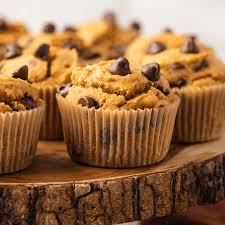

Chocolate Chip Pumpkin Muffins
CHOCOLATE CHIP PUMPKIN MUFFINS

Description
Fluffy. Pumpkiny. Chocolaty. An absolutely scrumption dessert. Perfect
for fall baking and simple enough for even a novice baker (like me!)
to knock it out of the park. The longest aspect of the recipe is likely
waiting for the oven to preheat.
Ingredients
- 2 Eggs
- 1 cup Sugar
- 1/2 cup Pumpkin
- 3/4 cup Canola Oil
- 1 1/2 cup Flour
- 1 tsp Baking Soda
- 1/2 tsp Baking Powder
- 1/2 tbsp Pumpking Pie spice
- 1 tsp Cinnamon
- 1/4 tsp Nutmeg
- 1/4 tsp Allspice
- 1/2 tsp Salt
- 1 cup Semisweet Chocolate Chips
Instructions
- Preheat oven to 400 deg F.
- Prepare muffin pan and coat with butter and/or flour to prevent sticking.
- In a large bowl; combine eggs, sugar, pumpkin, and oil. Mix until smooth.
- In a separate bowl; combine flour, baking soda, baking powder, pumpkin
pie spice, and salt.
- Add flour mixture slowly to pumpkin mixture, mixing well.
- Fold in chocolate chips.
- Evenly fill 12 muffin cups.
- Bake for 15-17 miniutes OR until toothpick inserted near center comes out clean.
- Cool in pan for 10 min.